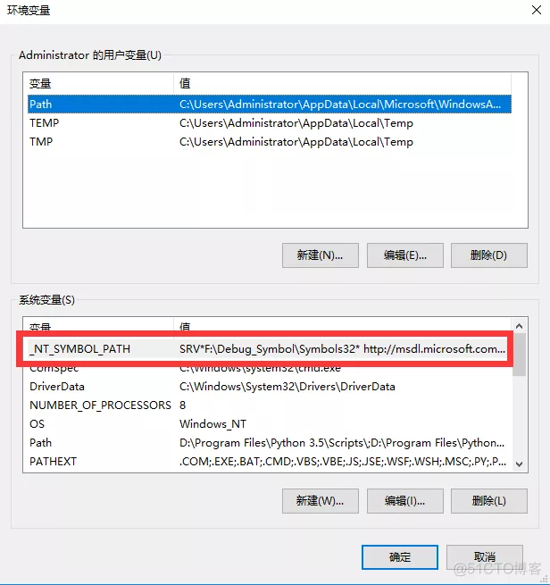

一、WinDbg简介
WinDbg是微软发布的一款免费而十分强大的调试工具。既然是微软自己发布的调试工具，那它对微软产品的调试当然是十分的强大。Windows 调试器 (WinDbg) 可用于调试内核模式和用户模式代码，来分析故障转储，并检查代码时 CPU 寄存器执行，同时也是一款相当优秀的源码级(source-level)调试工具。相比较于Visual Studio，它是一个轻量级的调试工具，所谓轻量级指的是它的安装文件大小较小，但是其调试功能，却比VS更为强大。
二、获取和安装
2.1、获取途径
可以将Windows调试工具作为开发工具包的一部分或作为独立工具集获取：
- 作为WDK的一部分
Windows的调试工具包含在Windows驱动程序工具包（WDK）中。 Download the Windows Driver Kit (WDK). - 作为Windows SDK的一部分
Windows软件开发工具包（SDK）中包含Windows调试工具。要下载安装程序或ISO映像，请参阅Windows开发人员中心上的 Windows 10 SDK - 作为独立的工具集
通过开始安装Windows SDK，然后在要安装的功能列表中仅选择Windows的调试工具（并清除所有其他功能的选择），可以在不安装Windows SDK或WDK的情况下单独安装Windows的调试工具。要下载安装程序或ISO映像，请参阅Windows开发人员中心上的 Windows 10 SDK
2.2、安装
安装过程略
下面是安装后的截图
作为独立工具集安装后
作为SDK一部分安装后
启动后的界面
三、配置
安装好之后就需要配环境变量，打开环境变量配置界面 我的电脑->右键属性->高级系统设置->环境变量设置->在系统变量里找到path,把你的WinDbg安装目录写上去
设置好后，在命令行里输入windbg，如果能跑起来，则设置成功,然后再在系统变量中创建一个名为 _NT_SYMBOL_PATH,值为:SRV*F:\Debug_Symbol\Symbols32* http://msdl.microsoft.com/download/symbols

启动Windbg 打开一个exe看到这个说明配置成功
四、功能
用户成功安装微软Windows调试工具集后，能够在安装目录下发现四个调试器程序，分别是：cdb.exe、ntsd.exe、kd.exe和Windbg.exe。其中cdb.exe和ntsd.exe只能调试用户程序，Kd.exe主要用于内核调试，有时候也用于用户态调试，上述三者的一个共同特点是，都只有控制台界面，以命令行形式工作。
Windbg.exe在用户态、内核态下都能够发挥调试功能，尤其重要的是，它不再是命令行格式而是采用了可视化的用户界面。所以绝大部分情况下，我们在谈及Windows调试工具的时候，都直接指向Windbg，而不大谈及前三者。
Windbg在用户态和内核态下，都支持两种调试模式，即“实时调试模式（Living）”和“事后调试模式（Postmortem）”。所谓实时模式，是被调试的目标对象（Target）当前正在运行当中，调试器可以实时分析、修改被调试目标的状态，如寄存器、内存、变量，调试exe可执行程序或双击双机实时调试都属于这种模式；所谓事后模式，是被调试的目标对象（Target）已经结束了，现在只是事后对它保留的快照进行分析，这个快照称为转储文件（Dump文件）。Windbg另一个重大优点，还在于它支持源码级的调试，就像VC自带的调试器一样。虽然提供了用户界面，但Windbg归根结底还是需要用户一个个地输入命令来指挥其行动。这就是他的Command窗口。每个调试命令都各有使用范围，有些命令只能用于内核调试，有些命令只能用于用户调试，有些命令只能用于活动调试。但用户也不必记得这许多，一旦在某个环境下，使用了不被支持的命令，都会显示“No export XXX found”的字样。
我们通过各调试器比较表，看看windbg的组要功能
内核调试方面：
用户调试方面：
虽说WinDbg在无源码调试方面确实比较困难，但在调试内核方面却真的有独到之处。


1301d7391d64 2年前
1ae81fabfba1 2年前